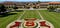
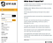
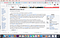
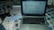
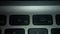
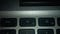
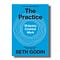
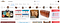

Maybe it stands for Standford



It stands for this story that God narrated us in THIS BOOK by telling us that He taught Adam great names that were unknown to angels and by the way other creatures. This the unique value proposition to prove that adam held from Him secret knowledge that differentiates him from angels who was ignorant about those great names
God for sure teach us great knowledge and often through people like us or through the wide wild world of animals because that's after writing the first paragraph of this article that I almost decided to not continue this writing and went to google. I switched from writing to learning the word MERSH that I just had read from this blog article of Seth Godin screen captured above. Once on Google, I have not only learned what the word MERSH means and stands for but I have also learned another new word that I was willing to know days before. Remember In this last article I was talking about how English merges two different words to form new meaning and asked a friend of mine who gave me some other words as examples of this artifact and that was also a word printed on the car in front of me that had triggered this conversation about words that I had this day ago. Another clue about how words fire cognitive signal that can lead to actions like they did Today because by willing to know the meaning of the word MERSH I also learned the name of this transformation, this words artifact, this concatenation of words for shaping or coining new meaning by willing to know what the word MERSH means, what it stands for and for Wikipedia it stands for this

just also learned what this MacBook’s keyboard keys stand for.

These two keys stand for reducing and increasing the light of the keyboard.

These two other keys stand for reducing or increasing the luminosity of the screen,

This one stands for displaying all the windows opened, This other stands for showing the applications.
If my past PC guy experience and my lack of curiosity about keyboard features led me to not care about that since I am using a mac by intermittence and I am more attracted by software and applications rather than hardware. Seems I remarked that steve jobs said more applications than he said software I guess Bill gates used to say software more than applications. I could have a clearer knowledge of the frequency of occurrence of these words in their public speakings by taking all the video and text articles as the input of this natural language algorithm that can be driven by NLTK for python or MITIE, Text2Vec, and MOSES for C++. You also can do that if you are skilled in software engineering and data science. If not it is never late and this is not difficult to learn at all and requires Practice.

The curiosity gap Worked well here and the fact that the words were capitalized by Seth Godin also helped me focus on these words listing because Maybe I would not notice them if they were in small caps. I was curious of course but I was also ignorant about these new words I learned today as angels did in front of Adam and like them so I am grateful to God. Before starting to write all of this I was just willing to write about the possibility that we have now by being able to work, lead, create, and impact this world without leaving our bed. Now that I have written the word bed, testbed just popped in my mind because I consumed it some hour earlier reading the cathedral and the bazaar a book heard from Seth Godin reading recommendation when he was PODTALKING with Grenier whom I reach out just after that and shared with him my writings and book projects. Reviewed also the project history of Seth, sent the domino pdf document to my self to get it here on my MacBook because I planned to read it again and I strongly believe that it has other interesting things to teach me that could lead to a disruptive system of book publishing and idea spreading that stand for something that matter.
Before that let's start the word game I am describing here with this question Despite the word MERSH what other word I learned today?
hint: here are the letters that form the word asked EMTORPAUAN
hint: Boats have something to do with the first word in french like harbor does in English.
Hint: MANTEAU is one of these two words that form the new word by using the transformation that the asked word name
The word is in the pictures below
